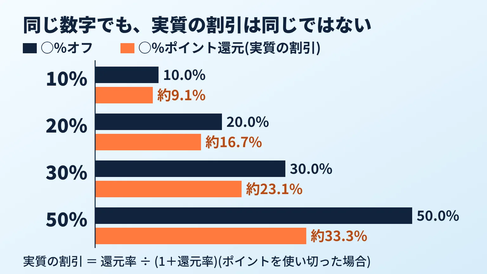

「30%」は、どちらも同じ？
10,000円の靴が売られている。A店は「30%オフ」、B店は「30%ポイント還元」だ。どちらも「3,000円分お得」に見える。
A店とB店、本当にお得なのはどちらだろう。
① A店 ② B店 ③ 同じ
30%オフの場合
A店では、10,000円の30%が引かれる。
| 10,000 × (1 － 0.3) ＝ | 7,000円 |
払うお金そのものが3,000円減る。「3,000円分お得」は、本当に3,000円だ。
30%ポイント還元の場合
B店では、10,000円を払う。そのあとで、10,000円の30%、つまり3,000ポイントがもらえる（1ポイントは1円分として使えるとする）。払うお金は10,000円のままで、3,000円分のポイントを「次の買い物」で使えるようになるだけだ。
ここで、もらったポイントを同じ店で使い切るとしよう。手に入る商品は 10,000 ＋ 3,000 ＝ 13,000円分になる。では、13,000円分の商品を手に入れるために、いくら払うことになるだろう。
| 13,000円分の商品を手に入れるために払うお金 | |
| A店（30%オフ）13,000 × 0.7 ＝ | 9,100円 |
| B店（30%還元） | 10,000円 |
B店のほうが900円多く払っている。割引率にすると、10,000 ÷ 13,000 ≒ 0.769 なので、実質は約23.1%引きだ。

還元率が変わると？
還元率を r とすると、ポイントを使い切ったときの実質の割引率は、次の式で表せる。
例えば r ＝ 0.3 なら、0.31.3 ≒ 0.231 だ。還元率ごとに計算してみよう。
| 還元率 | 実質の割引率 |
| 10% | 約9.1% |
| 20% | 約16.7% |
| 30% | 約23.1% |
| 50% | 約33.3% |
還元率が大きいほど、「オフ」との差は広がる。50%還元でも、実質は3分の1引き（約33.3%）にとどまる。
なぜ差が出るのか
理由は、「もとにする量」が違うことにある。「30%オフ」は、払う金額10,000円の30%を減らす。「30%還元」は、同じ10,000円の30%をあとからもらうが、それを使うと商品の合計が13,000円に増える。割合は、もとにする量が変わると、同じ30%でも意味が変わってしまう。
第1回で、「20%値上げしてから20%値下げしても、元の価格に戻らない」ことを確かめた。それと同じ考え方だ。
「2回のオフ」は足し算ではない
同じ落とし穴は、割引の重ね技にもある。「2割引き、さらに2割引き」は、4割引きだろうか。1000円で確かめると、1000 × 0.8 × 0.8 ＝ 640円。実際は36%引きだ。
| 20%オフ ＋ 20%オフ：0.8 × 0.8 ＝ | 0.64 → 36%引き |
| 30%オフ ＋ 20%オフ：0.7 × 0.8 ＝ | 0.56 → 44%引き |
| 50%オフ ＋ 20%オフ：0.5 × 0.8 ＝ | 0.40 → 60%引き |
割引は「足し算」ではなく「かけ算」で重なっていく。
5,000円の商品が「30%オフ」になっていて、レジでさらに「クーポンで10%オフ」になった。いくらになるだろう。全部で何%引きになったかも計算してみよう。
ポイントは使い切れる？
実質約23.1%引きになるのは、ポイントを全部使い切った場合だ。もし3,000ポイントのうち1,500ポイントしか使えなければ、10,000円で手に入るのは11,500円分で、実質の割引は 1,500 ÷ 11,500 ≒ 13.0% になる。ポイントには、使える店や期限が決まっているものもある。
これは「ポイントが悪い」という話ではない。いつも使う店なら、ポイントは役に立つ。大切なのは、数字の意味を知ったうえで選ぶことだ。
まとめ：比べるための3つの質問
- 何を基準にした「%」なのか
- 実質いくらで、何円分が手に入るのか
- ポイントは使い切れるのか（使える場所・期限）
「20%ポイント還元（同じ店で使い切れる）」と「15%オフ」では、どちらがお得だろう。
答え合わせをしよう。20%還元の実質の割引は、0.2 ÷ 1.2 ≒ 0.167 で約16.7%。使い切れるなら、15%オフより少しお得だ。ただし、ポイントを使い切れなければ、逆になることもある。「やってみよう」の答えは、5,000 × 0.7 × 0.9 ＝ 3,150円で、全部で37%引きだった。
同じ数字でも、何を基準にしているかで意味が変わる。買い物の場面で、ぜひ計算して確かめてみてほしい。